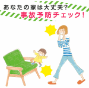
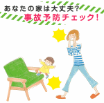

事故予防ﾁｪｯｸ!

■ご利用方法
【できている】【できていない】のどちらかを選んでﾎﾞﾀﾝを押して､次の画面に進んでください｡
※ｺﾝﾃﾝﾂはﾀﾞｳﾝﾛｰﾄﾞできません｡ご了承ください｡

|
あなたの家は大丈夫? 事故予防ﾁｪｯｸ! |
|
 |
|
｢おやこですくすく｣でご紹介した事故予防のﾁｪｯｸﾎﾟｲﾝﾄが一覧ｼｰﾄで確認できます｡あなたの家ももれなくﾁｪｯｸしましょう! ■ご利用方法 【できている】【できていない】のどちらかを選んでﾎﾞﾀﾝを押して､次の画面に進んでください｡ ※ｺﾝﾃﾝﾂはﾀﾞｳﾝﾛｰﾄﾞできません｡ご了承ください｡ |
| ﾁｪｯｸをはじめる |